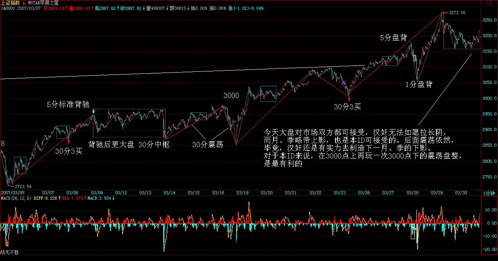
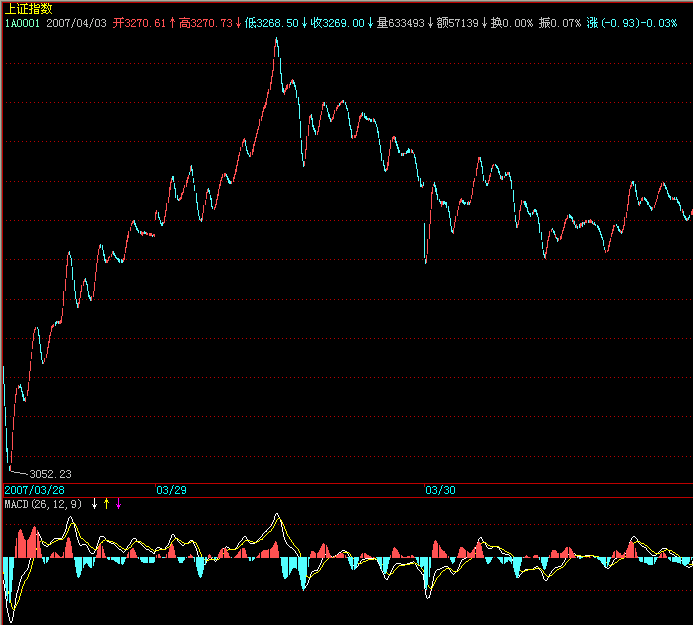

|
 |
教你炒股票41：没有节奏，只有死
(2007-03-30 15:17:22)
市场的节奏，只有一个：买点买、卖点卖。这么简单的问题，但从来能遵守的人，能有几个？是什么阻止你倾听市场的节奏？是你的贪婪与恐惧。买点，总在下跌中形成，但恐惧阻止了你；卖点，总在上涨中，但贪婪阻止了你。一个被贪婪与恐惧所支配的人，在市场中唯一的命运就是：死！
市场中，买点上的股票就是好股票，卖点上的股票就是坏股票，除此之外的好坏分类，都是瞎掰。你的命运，只能自己去把握，没有任何人是值得信任的，甚至包括本ID。唯一值得信任的就是，就是市场的声音、市场的节奏，这需要你用心去倾听，用一颗战胜了贪婪与恐惧的心去倾听。
市场的声音，永远是当下的，任何人，无论前面有多少辉煌，在当下的市场中，什么都不是，只要有一刻被贪婪与恐惧阻隔了对市场的倾听，那么，这人，就走入鬼门关。除非，此人能猛醒，否则，等待的只有：死亡。记住，1万亿与1万，变成0的速度是一样的，前者甚至可以更快。
买点买，买点只在下跌中，没有任何股票值得追涨，如果你追涨被套，那是活该；卖点卖，没有任何股票值得杀跌，如果你希望瘦身，那就习惯砍仓杀跌吧。即使你搞不懂什么是买点卖点，但有一点是必须懂的，就是不能追涨杀跌。就算是第三类买卖点，也是分别在回调与反弹中形成的，哪里需要追涨杀跌？
买卖点是有级别的，大级别能量没耗尽时，一个小级别的买卖点引发大级别走势的延续，那是最正常不过的。但如果一个小级别的买卖点和大级别的走势方向相反，而该大级别走势没有任何衰竭，这时候参与小级别买卖点，就意味着要冒着大级别走势延续的风险，这是典型的刀口舔血。市场中不需要频繁买卖，战胜市场，需要的是准确率，而不是买卖频率，只有券商与税务部门才喜欢买卖高频率。
市场不是赌场，市场的操作是可以精心安排的。当你买入时，你必须问自己，这是买点吗？这是什么级别的什么买点？大级别的走势如何？当下各级别的中枢分布如何？大盘的走势如何？该股所在板块如何？而卖点的情况类似。你对这股票的情况分析得越清楚，操作才能更得心应手。
至于买卖点的判断，如何提高其精确度，那是一个理论学习与不断实践的问题，但这一套程序与节奏，是不会改变的。精度可以提高，但节奏不可能乱，节奏比精度更重要。无论你对买卖点判断的水平如何，即使是初学者，也必须以此节奏来要求自己。如果你还没有市场的直觉，那么就强迫自己去执行，否则，就离开。
对于初学者，一定不能采取小级别的操作，你对买卖点的判断精确度不高，如果还用小级别操作，不出现失误就真是怪事了。对于初学者，按照30分钟来进出，是比较好的，怎么也不能小于5分钟，5分钟都没有进入背驰段，就不能操作。级别越小，对判断的精确要求越高，而频繁交易而导致的频繁失误只会使心态变坏，技术也永远学不会。先学会站稳，才考虑行走，否则一开始就要跑，可能吗？
节奏，永远地，只有市场当下的节奏，谁，只要与此节奏对抗，只有痛苦与折磨在等待。注意，一定要注意，所谓的心态好不是如被虐狂般忍受市场节奏错误后的折磨，这一定要注意。很多人，错了，就百忍成钢，在市场中是完全错误的。市场中，永远有翻身的机会，那前提是，你还有战斗的能力。一旦发现节奏错误，唯一正确的就是跟上节奏，例如，错过第一买卖点，还有第二买卖点，如果你连第三买卖点都错过，连错三次，死了也活该。
为什么有三类买卖点？市场太仁慈了，给你三次改错的机会，你如果连这都不能改正，那就休息去，喝茶去，三次都不能改错，还犯同样的错误，不休息、不喝茶，还能干什么？那些一个股票上涨N倍后还问能不能买，甚至还追高买，这种人，还能说什么？难道上涨N倍还看不到买点吗？看着很多散户，在连续拉升后还赌后面的所谓涨停，只能好不客气地说：死了活该。
市场是残酷的，对于企图违反市场节奏的人来说，市场就是他们的死地；市场是美好的，市场就是巴赫的赋格曲，那里有生命的节奏。节奏，永远是市场的节奏，一个没有节奏感的市场参与者，等待他的永远都是折磨，抛开你的贪婪、恐惧，去倾听市场的节奏。周末了，放下一切，却倾听大自然的节奏，生命的节奏，音乐的节奏，然后再回来倾听，这市场的节奏。与市场共舞，你的贪婪与恐惧一一剥落，你会变得光明无比。
每日解盘（2007-03-30 15:25:08 )
缠中说禅：2007-03-30 15:25:08
今天大盘对市场双方都可接受，汉奸无法如愿拉长阴，而月、季略带上影，也是本ID可接受的。后面震荡依然，毕竟，汉奸还是有实力去制造下一月、季的下影。
对于本ID来说，在3000点上再玩一次3000点下的震荡盘整，是最有利的。玩震荡，汉奸没什么水平，而现在管理层、散户都有恐高，需要时间治疗。
个股方面，三线已经被管理层监管警告，一线大盘打架不可能被散户接受，这两天就是例子，因此，二线是最好的平衡，谁都能接受，一些有中线潜力的二线已创新高，这就是点火，能否燎原，那是另外的问题。今天4点有会，必须走，先下，再见。

 每日解盘（2007-04-02
15：14：44)
缠中说禅：2007-04-02 15:14:44
前面已经说过，如果看不明白上海指数，就看深圳的。深圳今天的走势只表明一点，优质二线股还是得到更多人的认同。深圳成分股里，基本都是优质二线股。其实，今天最终能收成这样，也是经过刀光血影的。早上汉奸曾又使出拉金融股的一招，结果被破坏，没什么效果，才有后面二线股的整体走强。个股方面，看看上海、深圳今天涨停的，基本都是二线股与有真正题材的三线股，特别是上海，很多都是10元上下的，就知道后面真正可以产生利润的股票还是本ID前段时间已经明确指出的那些。具体就不说了，现在监管风暴下，少说点不会错。如果不会挑的，就去看300或深圳成分股，就那些股票，当然，金融股、特大盘股也会有表现的，但这类股票还是以打仗为主，如果资金量比较大的，组合部分也是可以的。现在的走势肯定是进二退一甚至是进三退二，快速拉升只可能对汉奸有利，把握节奏就很重要了。真看不明白的，就看5日线，你看这段时间这么折腾，其实都没破过5日线，看着不用闹心
每日解盘（2007-04-03)
旁观者注：始终没有找到04-03的解盘贴，从以下两贴中看怀疑贴过，可能删除了，有发现或保存的学长请补充，谢谢
缠中说禅：2007-04-03 15:38:24 [匿名] 3G2007-04-03 15:34:02 =
对，是加息，不过本ID一直觉得这次加息是一件很智力低下的事情，所以笔误可能也不是完全没原因的。
**************==
引用博主的话：“技术上，深圳面临前期上海已经过去的上两个高点的连线压力，而且9000点的心理压力也是很大的，这也是短期会面临震荡的心理基础，其实，合适震荡一下，走势越可能延续长，至于震荡的时间是哪一天，其实问题都不大，很多都是当下一个偶然因数导致的。
缠中说禅：2007-04-01 11:02:25
各位早上好，这版本来自卡萨尔斯，最权威的版本，昨天北京天气不好，今天还行，要出去走走。先下，再见。
缠中说禅：2007-04-02 20:58:49
[匿名] 新浪网友 2007-04-02 15:48:57
美元的主导地位将被颠覆，而美元被颠覆之后，人民币如何发展？
=
不是将被，而是正被。人民币的发展不是在固定的轨迹运行的，是一个当下合力的结果。难道一群大笨蛋来策划人民币的战略，人民币也能打赢？这世界还没有堕落到如此无耻的事情都可以发生。天时、地利都给了机会而搞不好，到时候你说能怪谁？还是先把自己的问题搞好，本ID现在就没觉得人民币搞得有多好。只是中国的国运在那里，只要不是超级大笨蛋，都不会太差而已。
缠中说禅：
2007-04-02
20:59:54
悠悠悠哉 2007-04-02 16:24:21
市场节奏是不是指 资金的流动？ 板块的互换？怎么去倾听，怎么去感受啊？有没有基础班能上啊？
=
先把个股运行的买卖节奏搞清楚，这是基础。
缠中说禅：
2007-04-02
21:09:34
[匿名] 头大也得看 2007-04-02 20:35:05 概念错误，不是三个中枢扩张，三个5分钟中枢如果在同一趋势里，只是一个5分钟级别走势，不存在构成30分钟中枢的可能。注意，中枢和走势不是同一个概念。先把中枢定义的递归方法看明白。问二：在一个5F上涨趋势中，第二个5F中枢应该为一个下上下中枢，那么如果扩张，这第二个5F中枢在30F中枢中处在什么位置？ 缠中说禅：
2007-04-02
21:14:26
[匿名] 炒汉奸 2007-04-02 20:59:07
估计博主要上课了,我先举手提问:1,"特别在人民币币值依然有着广阔上升空间而中国贸易顺差的趋势依然不断扩大的背景下，相对流动性过剩必将是中国经济的常态，从而为中国资本结构、融资结构、财富结构等升级换代提供契机与动力。--20年前日元升值以美国胜利告终,你认为人民币升值,胜者为谁?
--你认为未来10年内,中国和普通民众的财富结构将是怎样的趋势和形态?
=
预测这些没意义，问题的关键是，现在一切有利的因数都有了，如果还不赢，那该如何！
2,机械操作法中有没有一二三类买卖点之分?如果有,如何区分?
=
这个是一样的，买卖点与图形分解没什么关系，只是一些大级别的买卖点，被当成分解级别的来分解操作而已。是买点还是买点，不会因为分解了买点就变卖点。
缠中说禅：
2007-04-02
21:15:55
[匿名] abc 2007-04-02 21:05:17
请教LZ对600010包钢的中期走势有何看法？
== 缠中说禅：
2007-04-02
21:22:12
[匿名] 钱龙 2007-04-02 21:11:58
缠姐好，对于第三买点的形成还有点疑问，为什么你说次级别回抽在次级别图中只要回拉两次就可以了，我想，即使这个次级别回抽是盘整走势，也应该最少有五段，那就是有三次回拉才完整，不知该如何理解
==
那两次回拉的是次次级别的，这问题以前说过。三个次次级别构成一个次级别，想想这就明白了
缠中说禅：
2007-04-02
21:24:23
[匿名] 球球 2007-04-02 21:13:02
缠MM，偶买了些中小企业股，该板块走势如何？谢谢
=
这是一个相对独立的中长线板快，选那些盘小有成长性的反复操作，比瞎跑实际效果更好。
缠中说禅：
2007-04-02
21:26:08
[匿名] AAA 2007-04-02 21:13:56
按楼住的理论，似乎目前绝大多数的股票在日线级别上都没有买点了，楼住怎么看呢？
==
缠中说禅：
2007-04-02
21:32:15
[匿名] 也许认识你2007-04-02 21:17:23 那么3个次级别中枢方向是否一定是（上下上）＋（下上下）＋（上下上）？这几个中枢是只有这个顺序还是可以交换？如（上下上）＋（上下上）＋（下上下）？
3个次级中枢（上下上）难道不可以构成本级别中枢？
==
还是概念混乱，上涨、下跌都至少有两个以上次级别中枢，是3个次级别走势类型的重合部分构成中枢，而不是3个次级别中枢的重合构成中枢。构成中枢的次级别走势类型显然都是完成的，而次级别中枢对于次级别走势来说却不一定是完成的。请把中枢、走势类型、已经相互构成的递归定义弄清楚。
缠中说禅：
2007-04-02
21:35:12
[匿名] 阿Q 2007-04-02 21:22:36
为什么杭萧钢构今天出来后还是涨停？极其不理解。
==
市场不关心你的理解，市场只有当下的买卖。
缠中说禅：
2007-04-02 21:43:21
[匿名] IBM 2007-04-02 21:28:26
缠中说禅：
2007-04-02
21:44:56
[匿名] 剑十三2007-04-02 21:35:27 == 缠中说禅：
2007-04-02
21:47:44
[匿名] 乐土 2007-04-02 21:42:40 1,在上海大盘的15分钟K线图上,明天上午若突破前面高点3272.41,责顶背驰的可能极大.这将预示这明天又是很刺激的一天?
2,您怎样看低市盈率的电力和煤炭板块?医药板块近几天好象走的比大盘弱?谢谢!
==
大盘不震荡单边上才是不正常的。板快是轮动的，有些板快看好的人太多，自然拉不起来，人人都在轿子里，谁抬？
缠中说禅：
2007-04-02
21:53:32
星星 2007-04-02 21:44:33
只要盘整背驰，就在i+2为偶数时卖出，为奇数时买入。如果没有，当i为偶，若Ai+3不跌破Ai高点，则继续持有到Ai+k+3跌破Ai+k高点后在不创新高或盘整顶背驰的Ai+k+4卖出，其中k为偶数；
有几点不解，请楼主讲一下：
1、如果没有盘整背驰，当i为偶，若Ai+3跌破Ai高点，是不是要出掉，是不是一跌破就要出掉？
==
除非出现小级别转大级别的a+B`情况，跌破和盘整背驰是一回事情。
2、当i为偶，若我在Ai的低点买入，若Ai+3不跌破Ai高点，则继续持有到Ai+k+3跌破Ai+k高点后在不创新高或盘整顶背驰的Ai+k+4卖出，其中k为偶数；那有没有可能Ai+k+3直接跌破Ai的低点而造成亏损？
==
这问题和上面是一回事。 缠中说禅：
2007-04-02
21:55:57
[匿名] touchnet 2007-04-02 21:53:30 ----
对不起，上面的组合以及段都是指次级别而言。
==
同级别分解，不允许盘整里的中枢延伸，因此3段次级别就是了，不存在任意的问题。
缠中说禅：
2007-04-02
21:57:50
[匿名] 绝对黑色 2007-04-02 21:53:21
另外想问问禅主，对于A的级别要大于B的级别这句话，是指A的中枢区间包含着B的中枢区间吗，以至于，B是围绕A做震荡，可看做为盘整，不知道这样理解对不对？ 不一定，A和B完全可以没有任何重合的地方。
＝＝
那怎么判断它的级别大呢？迷茫中，中枢区间大？还是扩展大？
==
请先把递归定义搞清楚。级别和区间大小没什么必然关系。
缠中说禅：
2007-04-02
22:01:26
[匿名] 禅迷胡 2007-04-02 21:50:14
禅姐，请问您什么时候会放弃一只一直操作的股票呢？
==
其实，一只股票在他年老色衰前都可以一直玩下去，一般来说，在超大级别卖点出现时，例如季度甚至是月线的，就等于宣告这股票已经精尽人亡。
缠中说禅：
2007-04-02
22:07:12
微微果二 2007-04-02 21:59:11
可否跟缠姐讨论一下人生发展的问题。我上了一个不错的大学，但是上了一个烂专业，旅游管理。出来工作了两年，在银行，干基层去年辞职了，然后迷失了方向，一直到现在都不知道自己该干什么。不想上班，但一是怕父母担心，二是没有找到可以独立存活的生存之道。有时候想着自己还不如不上大学，那现在就不会有那么多的束缚了。缠姐怎么看待职业发展问题？
==
如果你单纯为了生存而憋屈自己，那么，世界本来就是坟墓，在哪里干什么都一样。如果不是这样，日日是好日，时时是花时，又何必分什么天堂地狱？选什么股票其实不重要，关键是要选好买点，明白股票之道，工作之道其实道理是一样的。等待你的买点或换股的时机，别抛了一只买点上的股票去换一个卖点上的。一个人，可以操作一只股票获取最大利润，关键是买点卖点的节奏，而不是股票本身。炒的是股票，而不是股票炒你，工作是一样的，人生也是一样的。
缠中说禅：
2007-04-02 22:14:02
[匿名] 酒吧心情 2007-04-02 21:26:53 请缠JJ， 能不能再把重点强调一下。
对于目前股票的普遍走势，怎样才能准确把握背的力度，特别是盘整背的力度，怎样才能转化成趋势，或者是反趋势。
缠中说禅：
2007-04-02 22:16:22
[匿名] 九头鸟 2007-04-02 22:14:02 概念有问题，一个中枢的完成，是和第三类买卖点相关的。如果一个中枢延伸，就证明没完成。
|
|
|
|